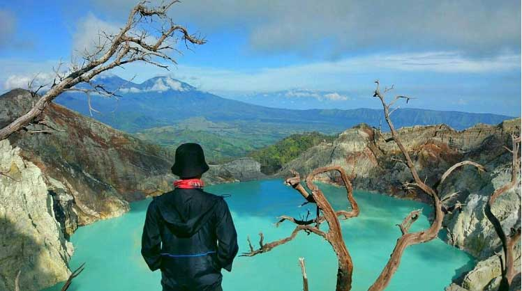

Monas
by Admin
Posted on Juli 4, 2019 at 12:00 PM

Ini dia tempat wisata di Jakarta yang paling ikonik. Monumen Nasional alias Monas,landmark kebanggaan warga Jakarta ini diapit oleh bangunan- bangunan penting seperti Masjid Istiqlal, Gereja Katedral, Istana Negara, serta Gedung Balai Kota. Kalau kamu naik ke puncak Monas, kamu bisa melihat indahnya pemandangan Jakarta dari ketinggian. Monas dibuka setiap hari dari pukul 08.00 sampai 15.00, kecuali Senin terakhir di tiap bulannya. Selain menggunakan mobil pribadi, kamu bisa naik angkutan umum seperti bus Transjakarta dan taksi buat sampai ke Monas.
Komentari :

Ganjar Pranowo
Tempatnya keren rekomendasi banget..!!Kawah Ijen
by Admin
Posted on Juli 4, 2019 at 12:00 PM

Kawah yang Lokasinya berada di perbatasan antara kota Banyuwangi dan
Bondowoso, tempat piknik di Banyuwangi yang menawarkan keindahan
Panorama alam yang menarik.
Di tempat  wisata kawah ijen ini juga terdapat keindahan alam yang hanya
ada 2 di Dunia. Keindahannya yaitu Blue Fire atau api yang berwarna Biru.
Penambangan Belerang yang membuat tempat ini semakin indah
pemadandangannya, patut untuk di kunjungi.
Anda bisa melihat keindahan Blue Fire dengan menunggu sampai dini hari.
Perjalanan biasanya di mulai pukul 1 dini hari dari pos paltuding. Karena setelah
jam 1 lah di perbolehkannya melakukan pendakian ke kawah Ijen.
Blue Fire akan terlihat saat langit masih petang,berakhir sekitar jam 5 pagi.
Karena cahaya api yang di kalahkan oleh cahaya Matahari sehingga Blue Fire tidak
kelihatan di siang hari.